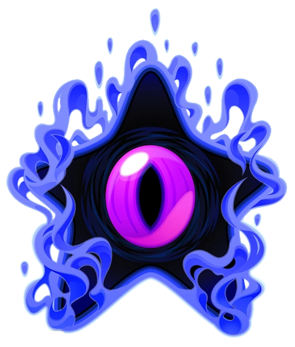

This is its default form. There is nothing about it that stands out (at least when compared to the others).
Dark Nebula
Do not open random treasure chests!
Dark Nebula is the final boss of Kirby Squeak Squad. It is a large black star with one eye. It is sealed in a chest for most of the game.

Biography
Dark Nebula is a very powerful and evil being. Due to this power, it was sealed inside a chest. Eventually, this treasure chest ended up in Dedede's possession for unknown reasons. Daroach figures out what's inside the chest, and steals it from King Dedede. Kirby chases after Daroach since he thinks his cake is inside the chest.
Kirby fights Daroach for the chest and wins, but shortly after the chest is stolen by Meta Knight. Kirby fights Meta Knight for the chest and also wins. Just as Kirby is about to open the chest, Daroach comes in and opens it himself.
Dark Nebula, taking the form of darkness, possesses Daroach, who turns into Dark Daroach. Kirby frees Daroach from Dark Nebula after fighting him.
Shortly after, Dark Nebula reveals its true form, a dark star with an eye. Kirby fights Dark Nebula, who switches between its different forms. After it is defeated by Kirby, it disintegrates and eventually explodes, never to be seen again!
Dark Nebula's Forms
Dark Nebula has a grand total of four forms: standard, fire, thunder, and ice.
Standard Form
Fire Form
Dark Nebula transforms into a red star. It shoots stars that can burn Kirby. It can also attack Kirby by releasing a large fireball that explodes once it reaches the ground.
Thunder Form
Dark Nebula transforms into a green star. It shoots stars that can shock Kirby. It can attack Kirby by releasing four electric streams. Dark Nebula can also move around in a zig zag pattern.
Ice Form
Dark Nebula transforms into a blue star. It shoots stars that can freeze Kirby. It can attack by firing an ice laser at the ground.